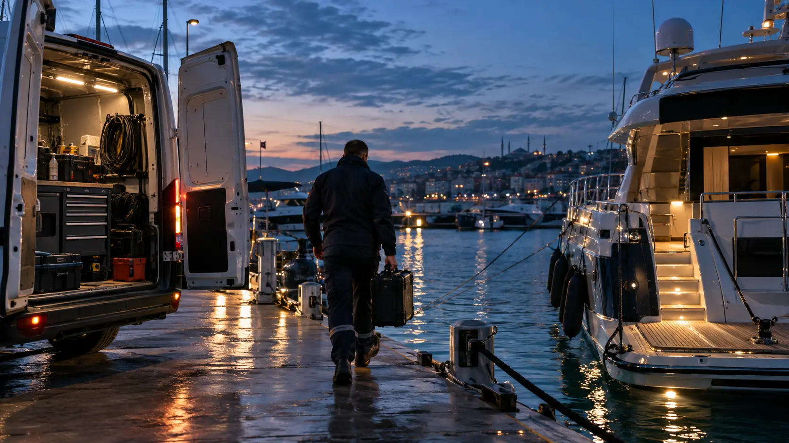

Marin Rehberler · 5 dk okuma
Marinalarda Mobil Marin Servis Seçerken Nelere Dikkat Edilmelidir?
Tekneniz arızalandığında onu servise götürmek çoğu zaman imkansızdır; servisin teknenize gelmesi gerekir. Tam donanımlı mobil araçlar ve sertifikalı mühendis kadrosu seyir güvenliğinizin temelidir.
1. Yetkin Teşhis ve Diagnostik Cihaz Altyapısı
Modern marin motorlar (Volvo Penta EVC, Yanmar Y-COP, MAN/MTU ECU, Cummins) elektronik diagnostik cihaz olmadan tamir edilemez. Servis ekibinizin marka bazlı orijinal test cihazlarına sahip olduğundan emin olun.
2. Hızlı Yedek Parça ve OEM Tedarik Zinciri
Sezon ortasında haftalarca parça beklememek için servisin geniş OEM filtre, impeller, kayış, sensör ve yağ stoğuna sahip olması gerekir.
3. Dijital Servis Raporu ve Şeffaf Maliyet
Yapılan her bakımın, değiştirilen her parçanın ve parça kodlarının yer aldığı kaşeli Dijital Servis Karnesi (Logbook) teknenizin ikinci el değerini doğrudan korur.
4. Geniş Marina Hizmet Ağı (Marmara, Ege, Akdeniz)
Kalamış, Ataköy, West Istanbul, Pendik, Tuzla, Yalova'dan başlayarak Bodrum, Marmaris, Göcek, Fethiye ve Çeşme marinalarına kadar uzanan mobil acil servis ağı.